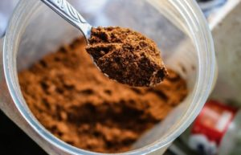
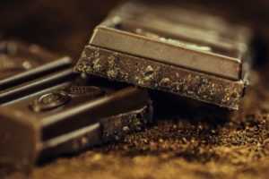

CHOCOLATES
About Us
Follow Us
Chocolate is a worldwide favorite. It has an alluring taste tingling your taste buds with different types of flavours
1.Milk Chocolate

Milk chocolate is perhaps the most popular type of chocolate. It actually contains only ten to 40 percent cacao mixed with sugar and milk (either condensed milk or milk solids). Milk chocolate is much, much sweeter than dark or bitttersweet chocolate and has a lighter color and less-pronounced chocolate taste. However, milk chocolate isn’t great for baking because it’s prone to overheating.
2. White Chocolate

White chocolate does not contain chocolate liquor or any other cocoa products besides cocoa butter. It doesn’t have a very chocolatey taste, but resembles smooth vanilla. White chocolate contains a minimum 20 percent cocoa butter, a maximum of 55 percent sugar, and about 15 percent milk solids.
3. Dark Chocolate

Dark chocolate contains chocolate liquor, sugar, and cocoa butter. It also commonly includes lecithin as an emulsifier and vanilla for flavor. Dark chocolate does not contain any milk solids. The amount of cocoa in dark chocolate bars ranges from 30 percent all the way up to 80 percent. Bittersweet chocolate and semi-sweet chocolate are also technically “dark chocolate,” but are used for baking purposes.
4. Bittersweet Chocolate

Bittersweet chocolate must contain at least 35 percent cocoa according to the FDA, but most bittersweet bars contain 50 percent, with others having as much as 80 percent cocoa. This type of chocolate often has a deeper, more bitter flavor than other types of chocolate.
5. Cocoa Powder

Cocoa powder is also comprised of 100 percent cacao with no sugar, but has had the cocoa butter extracted out. Cocoa powder is also very bitter, but is commonly used in recipes. It’s a helpful ingredient because it easily mixes in with doughs and batters without having to melt and monitor the chocolate.